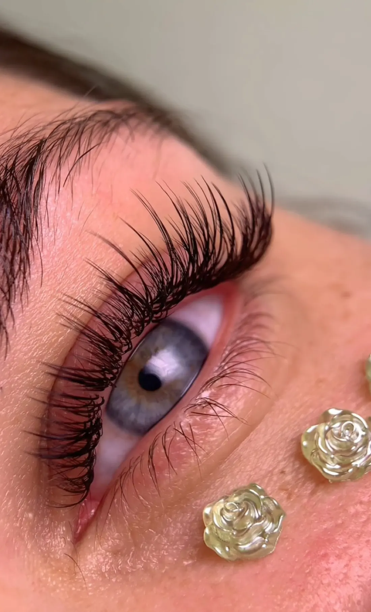
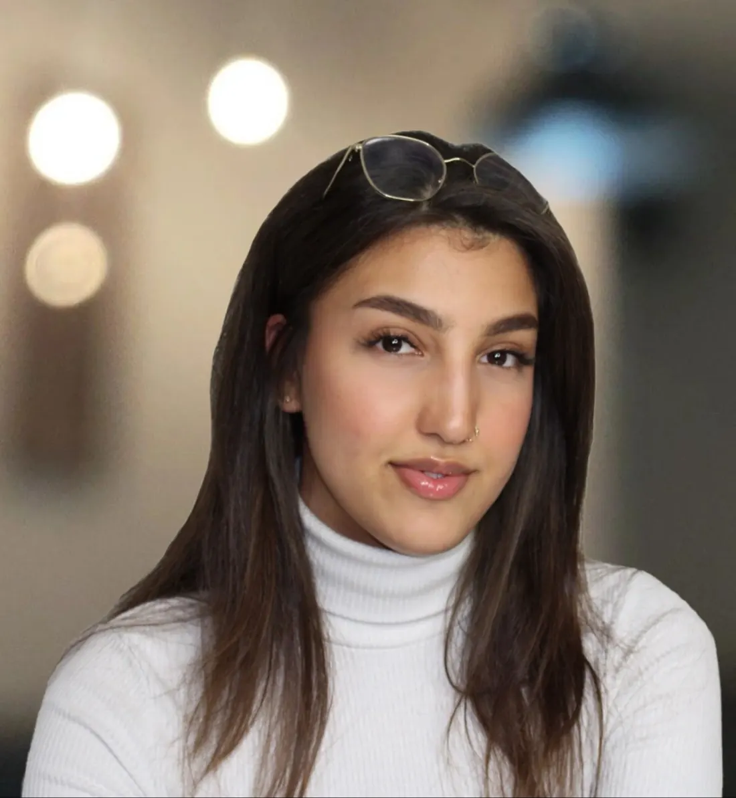
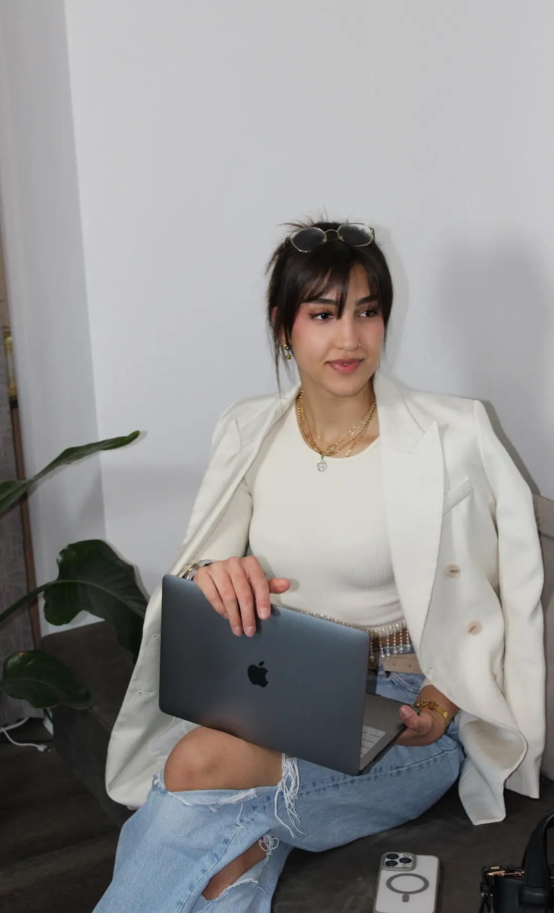
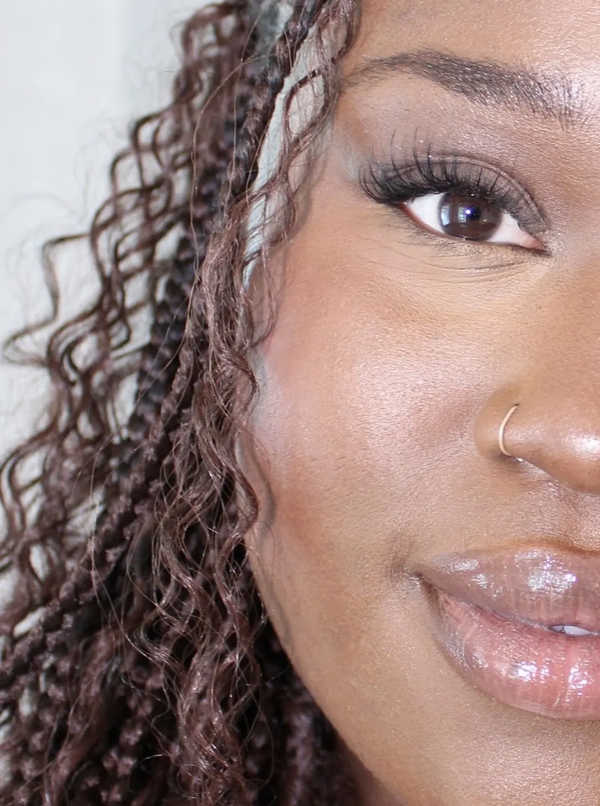
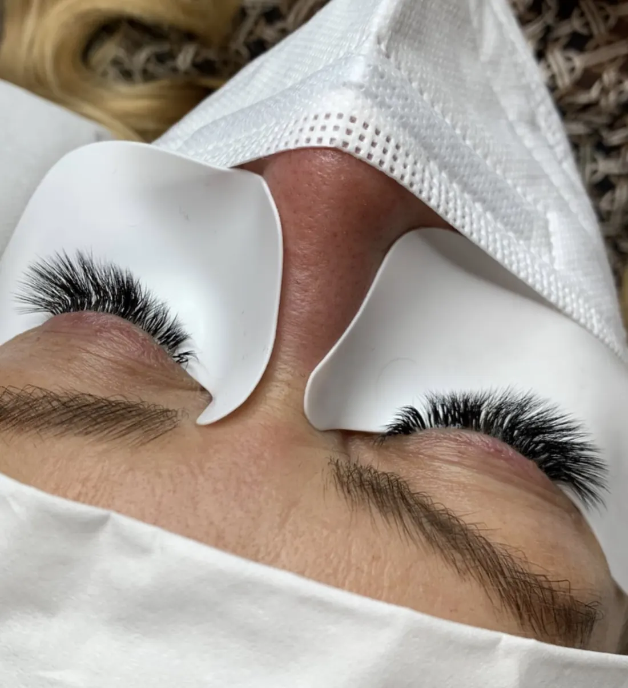

Wimpernstudio in Hamburg-Wandsbek
Wimpern, die halten – ganz ohne Schmerzen beim Entfernen.
Bei Honeymoon verbindet Iqra viel Fachwissen mit einer ruhigen, einfühlsamen Behandlung: individuell beraten, hygienisch gearbeitet und so gesetzt, dass deine eigenen Wimpern gesund nachwachsen können.

Handgefertigt, Wimper für Wimper

Die Frau hinter Honeymoon
Iqra
Iqra führt ihr Studio in Wandsbek seit über 6 Jahren mit sehr viel Gefühl für Details – vom liebevoll dekorierten Raum bis zu der ruhigen, geduldigen Art, mit der sie jede Behandlung angeht.
Kundinnen heben in ihren Bewertungen immer wieder dasselbe hervor: eine ausführliche, typgerechte Beratung, eine behutsame und hygienische Arbeitsweise und ein spürbares Fachwissen über Techniken und Materialien. Gewünschtes Material wird auf Anfrage sogar extra bestellt. Iqra berät auf Deutsch und Englisch. Laut Google Maps ist das Studio außerdem als „von Frauen geführt“ ausgezeichnet.
„Gekommen, um zu bleiben.“
„Ich liebe es, die Wimpernlounge zu verlassen und das Gefühl zu haben, ich hätte eben ein tolles Kaffee-Date mit einer sehr guten Freundin gehabt.“
Was Kundinnen besonders schätzen
Vier Dinge, die immer wieder genannt werden
Schmerzfrei & behutsam
Eine Stammkundin berichtet: Nach 18 Jahren Wimpernverlängerungen in verschiedenen Salons hat sie bei Honeymoon zum ersten Mal erlebt, dass auch das Entfernen der Lashes schmerzfrei ist.
Individuelle Beratung
Technik und Material werden auf die eigenen Wimpern abgestimmt. Mehrere Varianten werden vorgestellt, gewünschtes Material wird bei Bedarf extra bestellt.
Hygiene & Fachwissen
Kundinnen heben die behutsame, hygienische Arbeitsweise und das fundierte Fachwissen in ihren Bewertungen immer wieder besonders hervor.
Gesunde Wimpern
Ziel ist ein volles Ergebnis, das die eigenen Wimpern nicht überlastet – damit sie gesund nachwachsen können.
Leistungen
Womit wir dir helfen können
Preise laut Online-Terminbuchung, Stand Oktober 2026 – Änderungen vorbehalten. Direkt online buchen →
Häufige Fragen
Gut zu wissen
Tut die Wimpernverlängerung weh?
Nein. Kundinnen berichten ausdrücklich, dass sowohl das Setzen als auch das Entfernen der Wimpern bei Iqra schmerzfrei ist – ein Punkt, den viele nach Erfahrungen in anderen Studios besonders hervorheben.
Wie oft muss ich die Wimpern auffüllen lassen?
Je nachdem, wie schnell deine eigenen Wimpern nachwachsen, alle 2 bis 5 Wochen. Das Auffüllen ist als eigene Leistung buchbar, ab 69 €.
Brauche ich vorab ein Beratungsgespräch?
Für Neukundinnen nimmt sich Iqra vor der ersten Behandlung Zeit für eine ausführliche, typgerechte Beratung. Ein separates Beratungsgespräch (15 Min., 20 €) ist ebenfalls buchbar, wenn du dir noch unsicher bist.
Ich finde online keinen freien Termin – was kann ich tun?
Einfach per WhatsApp oder Instagram melden: Als Neukundin kannst du auf die Warteliste gesetzt werden, falls kurzfristig ein Platz frei wird.
Sprichst du auch Englisch?
Ja, Iqra berät auf Deutsch und Englisch.
Ergebnisse
Wie das Ergebnis aussieht


Bewertungen
Was Kundinnen sagen
5,0 ★ bei 282 Bewertungen auf Beautinda – 97 % davon 5 Sterne.
Top Rated (Beautinda) Verifizierter Partner (Beautinda)-
„Ich lass mir Lashes regelmäßig seit 2008 machen und war bisher nur in drei Salons, mit Honeymoon ist es der vierte Salon und ich bin total begeistert, es war jetzt ca. mein 6. Besuch und bin super zufrieden. Meinen Erfahrungen nach, hatte ich beim Entfernen der Lashes immer Schmerzen. Ich dachte es wäre normal (es hieß „ich bin zu empfindlich“), nach nun 18 Jahren hab ich erfahren, das es auch ohne Schmerzen geht… Iqra ist sehr freundlich, empathisch, arbeitet behutsam und hygienisch und hat ein gutes Fachwissen. Ihr Salon wurde mit viel Liebe zum Detail dekoriert und sieht schön und sauber aus. Zu den Lashes: Sie macht mir die Wimpern zwar nicht so voll, wie ich das gewohnt war (zu schwer für meine natürlichen Wimpern) aber voll genug (das was geht) und meine natürlichen Wimpern können gesund nachwachsen (endlich). Vielen Dank Iqra für deine tolle Arbeit, du hast eine neue Stammkundin ;)“
-
„Bin jetzt seit ca nen halben Jahr zur Wimpernverlängerung bei Iqra und ich bin wirklich begeistert. Ich wurde ausführlich und typgerecht beraten, mehrere Varianten der Technik und Materialen wurden mir vorgestellt. Auf Wünsche wird eingegangen und fehlendes/gewünschtes Material postwendend bestellt. Das Preis/Leistungs-Verhältnis stimmt absolut und was auch sehr wichtig ist: Iqra ist wirklich absolut authentisch und super lieb 😊 .. gekommen um zu bleiben“
-
„Iqra versteht definitiv ihr Handwerk. Professionalität trifft Ästhetik. Ich bin immer mehr als zufrieden. Man fühlt sich einfach nur wohl und schön. Danke Iqra ❤️❤️❤️“
-
„Ich liebe es, die Wimpernlounge mit wunderschönen, aufgefrischten Wimpern zu verlassen und das Gefühl zu haben, ich hätte eben ein tolles Kaffee-Date mit einer sehr guten Freundin gehabt <3“
-
„Vielen Dank liebe Iqra, dank dir bin ich seit langem endlich mal wieder mit meinen Augenbrauen absolut zufrieden. Ich schätze deine Kompetenz und absolut herzliche Art sehr, man fühlt sich bei dir sehr gut aufgehoben! Iqra ist eine absolute Herzensempfehlung 😌“
-
„Die beste Wimpernstylistin und inzwischen auch eine echte Freundin! Ihre Arbeit ist einfach perfekt – präzise, liebevoll und immer mit einem Lächeln. Ich fühle mich jedes Mal rundum wohl und kann sie von Herzen weiterempfehlen!“
-
„Handling was professional. Everything explained in a friendly Männer and no doubts about her skills.“
-
„Es ist immer wieder super. Das Ergebnis ist toll und die Atmosphäre herrlich entspannend.“
-
„Dieses unbeschreibliche Gefühl mit wundervollen Wimpern aus der Lounge zu gehen und sich gleichzeitig zu fühlen, als hätte man eine langjährige Freundin besucht.“
Auszüge aus echten Bewertungen auf Google, Treatwell und Beautinda.
Kontakt & Öffnungszeiten
Besuch uns in Wandsbek
- Adresse
- Schellingstraße 91
22089 Hamburg-Wandsbek - Telefon
- 0176 13420667
- @honeymoon.studioss
| Montag – Freitag | 08:00–20:00 |
| Samstag | 08:00–16:00 |
| Sonntag | Geschlossen |
Kein freier Termin online? Schreib Iqra per WhatsApp oder Instagram – als Neukundin wirst du gerne auf die Warteliste gesetzt.
So findest du uns
Schellingstraße 91, 22089 Hamburg-Wandsbek
Beim Laden der Karte wird eine Verbindung zu Google-Servern hergestellt und deine IP-Adresse an Google übertragen. Mehr dazu in der Datenschutzerklärung.